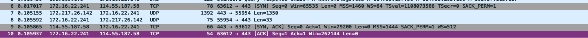
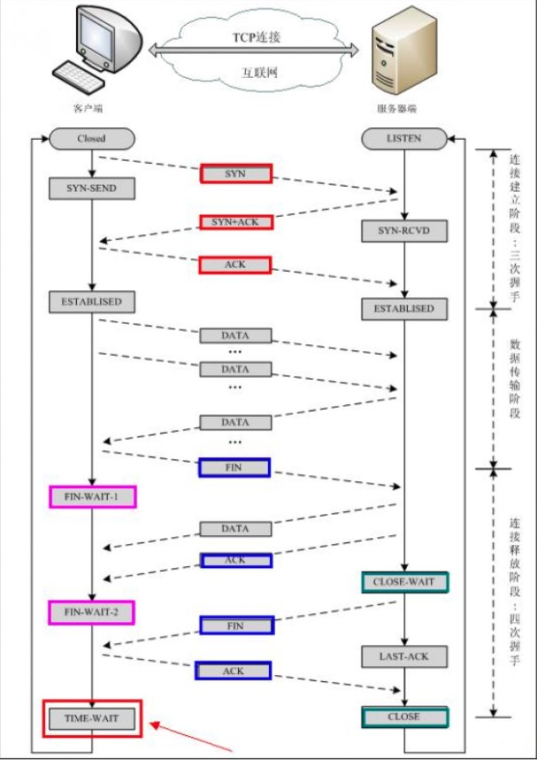

TCP (Transmission Control Protocol) 传输控制协议
TCP是一个面向连接的、可靠的、基于字节流的传输层协议。
TCP 特点
TCP/IP协议是Internet最基本的协议、Internet国际互联网络的基础，由网络层的IP协议和传输层的TCP协议组成。通俗而言：TCP负责发现传输的问题，一有问题就发出信号，要求重新传输，直到所有数据安全正确地传输到目的地。而IP是给因特网的每一台联网设备规定一个地址。
TCP是
面向连接的通信协议，通过三次握手建立连接，通讯完成时要拆除连接，由于TCP是面向连接的所以只能用于端到端的通讯。TCP提供的是一种可靠的数据流服务，采用“带重传的肯定确认”技术来实现传输的可靠性(ARQ)。TCP还采用一种称为“滑动窗口”的方式进行流量控制，所谓窗口实际表示接收能力，用以限制发送方的发送速度。TCP提供可靠性。TCP使用很多的功夫来保证连接的可靠性，TCP会精准的记录哪些数据发送了，哪些数据被对方接受了，哪些数据没有被接收到，而且会保证数据包按序到达，不允许有半点差错。
TCP是面向面向字节流。
TCP是全双工通信(收发)。
面向连接
三次握手过程。TCP连接建立过程：
第一次握手: 客户端尝:连接服务器，向服务器发送syn包（同步序列编号Synchronize Sequence Numbers），syn=j，客户端进入SYN_SEND状态等待服务器确认.
第二次握手：服务器接收客户端syn包并确认（ack=j+1），同时向客户端发送一个SYN包（syn=k），即SYN+ACK(Acknowledge character 确认序列号)包，此时服务器进入SYN_RECV状态.
第三次握手：客户端收到服务器的SYN+ACK包，向服务器发送确认包ACK(ack=k+1），此包发送完毕，客户端和服务器进入ESTABLISHED状态，完成三次握手

- 四次挥手过程。TCP连接断开过程：假设Client端发起中断连接请求，也就是发送FIN报文。Server端接到FIN报文后，意思是说”我Client端没有数据要发给你了”，但是如果你还有数据没有发送完成，则不必急着关闭Socket，可以继续发送数据。所以你先发送ACK，”告诉Client端，你的请求我收到了，但是我还没准备好，请继续你等我的消息”。这个时候Client端就进入FIN_WAIT状态，继续等待Server端的FIN报文。当Server端确定数据已发送完成，则向Client端发送FIN报文，”告诉Client端，好了，我这边数据发完了，准备好关闭连接了”。Client端收到FIN报文后，”就知道可以关闭连接了，但是他还是不相信网络，怕Server端不知道要关闭，所以发送ACK后进入TIME_WAIT状态，如果Server端没有收到ACK则可以重传。“，Server端收到ACK后，”就知道可以断开连接了”。Client端等待了2MSL后依然没有收到回复，则证明Server端已正常关闭，那好，我Client端也可以关闭连接了。Ok，TCP连接就这样关闭了！
TCP连接建立过程中为什么是三次握手？
在只有两次“握手”的情形下，假设Client想跟Server建立连接，但是却因为中途连接请求的数据报丢失了，故Client端不得不重新发送一遍；这个时候Server端仅收到一个连接请求，因此可以正常的建立连接。但是，有时候Client端重新发送请求不是因为数据报丢失了，而是有可能数据传输过程因为网络并发量很大在某结点被阻塞了，这种情形下Server端将先后收到2次请求，并持续等待两个Client请求向他发送数据…问题就在这里，Client端实际上只有一次请求，而Server端却有2个响应，极端的情况可能由于Client端多次重新发送请求数据而导致Server端最后建立了N多个响应在等待，因而造成极大的资源浪费！所以，“三次握手”很有必要！
TCP断开连接过程中为什么是四次挥手？
试想一下，假如现在你是客户端你想断开跟Server的所有连接该怎么做？第一步，你自己先停止向Server端发送数据，并等待Server的回复。但事情还没有完，虽然你自身不往Server发送数据了，但是因为你们之前已经建立好平等的连接了，所以此时他也有主动权向你发送数据；故Server端还得终止主动向你发送数据，并等待你的确认。其实，说白了就是保证双方的一个合约的完整执行！
TCP三次握手、传输数据、四次挥手过程

三次握手过程中可以携带数据么？
第三次握手的时候，可以携带。前两次握手不能携带数据。
如果前两次握手能够携带数据，那么一旦有人想攻击服务器，那么他只需要在第一次握手中的 SYN 报文中放大量数据，那么服务器势必会消耗更多的时间和内存空间去处理这些数据，增大了服务器被攻击的风险。
第三次握手的时候，客户端已经处于ESTABLISHED状态，并且已经能够确认服务器的接收、发送能力正常，这个时候相对安全了，可以携带数据。
使用的TCP协议
FTP（文件传输协议）、Telnet（远程登录协议）、SMTP（简单邮件传输协议）、POP3（和SMTP相对，用于接收邮件）、HTTP协议、HTTPS协议。
IP - 网际协议（Internet Protocol）
IP层接收由更低层（网络接口层例如以太网设备驱动程序）发来的数据包，并把该数据包发送到更高层—TCP或UDP层；相反，IP层也把从TCP或UDP层接收来的数据包传送到更低层。IP数据包是不可靠的，因为IP并没有做任何事情来确认数据包是否按顺序发送的或者有没有被破坏，IP数据包中含有发送它的主机的地址（源地址）和接收它的主机的地址（目的地址）
IP地址
每个计算机必须有一个 IP 地址才能够连入因特网。
每个 IP 包必须有一个地址才能够发送到另一台计算机。
域名
12 个阿拉伯数字很难记忆。使用一个名称更容易。
用于 TCP/IP 地址的名字被称为域名。runoob.com 就是一个域名。
当你键入一个像 http://www.runoob.com 这样的域名，域名会被一种 DNS 程序翻译为数字。
协议族（所有协议的概述）
TCP - 传输控制协议
TCP 用于从应用程序到网络的数据传输控制。
TCP 负责在数据传送之前将它们分割为 IP 包，然后在它们到达的时候将它们重组。
IP - 网际协议（Internet Protocol）
IP 负责计算机之间的通信。
IP 负责在因特网上发送和接收数据包。
HTTP - 超文本传输协议(Hyper Text Transfer Protocol)
HTTP 负责 web 服务器与 web 浏览器之间的通信。
HTTP 用于从 web 客户端（浏览器）向 web 服务器发送请求，并从 web 服务器向 web 客户端返回内容（网页）。
HTTPS - 安全的 HTTP（HTTP Secure）
HTTPS 负责在 web 服务器和 web 浏览器之间的安全通信。
作为有代表性的应用，HTTPS 会用于处理信用卡交易和其他的敏感数据。
SSL - 安全套接字层（Secure Sockets Layer）
SSL 协议用于为安全数据传输加密数据。
SMTP - 简易邮件传输协议（Simple Mail Transfer Protocol）
SMTP 用于电子邮件的传输。
MIME - 多用途因特网邮件扩展（Multi-purpose Internet Mail Extensions）
MIME 协议使 SMTP 有能力通过 TCP/IP 网络传输多媒体文件，包括声音、视频和二进制数据。
IMAP - 因特网消息访问协议（Internet Message Access Protocol）
IMAP 用于存储和取回电子邮件。
POP - 邮局协议（Post Office Protocol）
POP 用于从电子邮件服务器向个人电脑下载电子邮件。
FTP - 文件传输协议（File Transfer Protocol）
FTP 负责计算机之间的文件传输。
NTP - 网络时间协议（Network Time Protocol）
NTP 用于在计算机之间同步时间（钟）。
DHCP - 动态主机配置协议（Dynamic Host Configuration Protocol）
DHCP 用于向网络中的计算机分配动态 IP 地址。
SNMP - 简单网络管理协议（Simple Network Management Protocol）
SNMP 用于计算机网络的管理。
LDAP - 轻量级的目录访问协议（Lightweight Directory Access Protocol）
LDAP 用于从因特网搜集关于用户和电子邮件地址的信息。
ICMP - 因特网消息控制协议（Internet Control Message Protocol）
ICMP 负责网络中的错误处理。
ARP - 地址解析协议（Address Resolution Protocol）
ARP - 用于通过 IP 来查找基于 IP 地址的计算机网卡的硬件地址。MAC地址
RARP - 反向地址转换协议（Reverse Address Resolution Protocol）
RARP 用于通过 IP 查找基于硬件地址的计算机网卡的 IP 地址。
BOOTP - 自举协议（Boot Protocol）
BOOTP 用于从网络启动计算机。
PPTP - 点对点隧道协议（Point to Point Tunneling Protocol）
PPTP 用于私人网络之间的连接（隧道）。